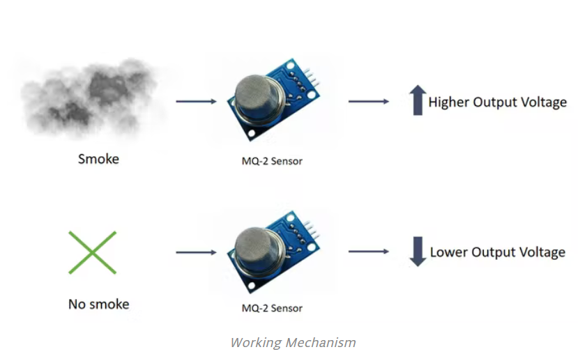

PIR SENSORS
MQ-2 Gas Sensor
Ultrasonic Sensors
Arduino with PIR Motion Sensor

With this Project, you will learn how to connect PIR sensor with Arduino and program the Arduino
to detect any moment in the room or around the motion sensor.
Smoke Detection using MQ-2 Gas Sensor

In this tutorial, we will learn how to detect Smoke and inflammable gases using an MQ-2 sensor.
Arduino Radar Project

The aim of this Arduino Radar project is to achieve a radar system prototype
based on an Arduino board that detects stationary and moving